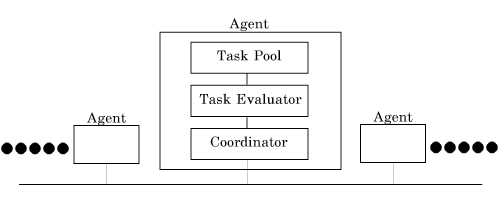

(60) Group Problem Solving System for Task Allocation Problems
Machine: Multi-PSI
Environment: PIMOS, SIMPOS
Language: KL1, ESP
Source Code: 1.0 MB
Documents: None
Overview
We have developed a multi-agent system for task allocation
problems.
Configuration

Function
Our system searches for semi-optimal solutions for task allocation
problems. We treat the following problem. Given a set of resources
(e.g., workers), a set of tasks (e.g., jobs) and task evaluation
functions defined by each resources (e.g., overtime), then find the
allocation of tasks to resources which minimize the sum of the
resources' task evaluation function values.
For this problem, our system assigns random task allocation to agents
(corresponding to resources one to one). Then the agents try to change
their task allocations, toward the globally optimal allocation, by
iteration of task migrations among them, through the exchanges of
messages. As the iteration proceeds, the result of the re-allocation
is improved. Since our system is based on a group of loosely-coupled
agents, it offers the following advantages:
- adaptability: Each of the agents has the mechanism of
coordination, so that they continue to search for better task
allocations, in spite of changes of the agents or the tasks during the
search.
- parallelism: Each agent may act in parallel, so that it
needs less time to reach the solution.
- built-in search strategy: In general, problem solving for
these kinds of problems requires knowledge about controlling search,
to avoid combinatorial explosion. However, there are problems which
are too complex to easily extract the knowledge. Our system can be
applied to such difficult problems.
FTP
- Group Problem Solving System for Task Allocation Problems [293K]

www-admin@icot.or.jp